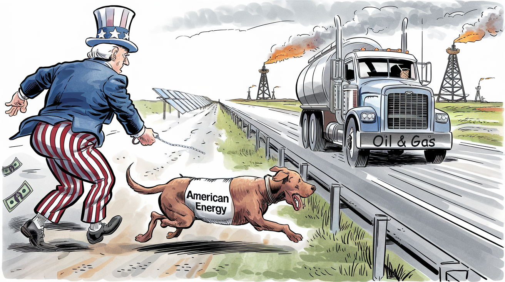

TL;DR: Trump’s EO expands federal oil/gas leasing, adding $2B in revenue by undercutting the free market, while consumers see no price benefit. Winners: Oil majors. Losers: private landowners and our grandchildren.

Shortly after taking office, Donald Trump signed an Executive Order titled “Unleashing American Energy.” The order portrays federal environmental oversight as an evil actor holding back “traditional” energy industries and reducing “consumer choice.” That’s certainly a political viewpoint, but what are its practical implications?
The order makes several significant changes to energy policy:
-
Supports the oil and gas industry through:
-
Broadening oil, gas, and coal leases on federal lands
-
Expediting lease application reviews
-
Deregulating greenhouse gas emissions from operations
-
Streamlining energy infrastructure permitting
-
-
Removes the “social cost of carbon” ($51/ton under Biden) from federal decision-making
-
Deprioritizes climate resilience policies
-
Suspends programs intended to transition America from geologic carbon, particularly EV infrastructure.
It’s a reactionary 1 policy document that reverses regulatory changes initially supported by a bipartisan Congress.
Any policy change has a financial impact, inevitably creating winners and losers. Ideally, the winner is the average American, but that’s rarely the case. So, who will pay and who will benefit?
The reinstatement of federal leasing mainly affects extraction economics rather than total emissions. While federal lands produce 25% of U.S. oil and gas, restricting leases merely shifted production from public to private landowners. The contrast in terms is striking: private leases in the Permian Basin command $385/acre with 20-25% royalties and tight exploration deadlines. In contrast, federal leases offer 10-year exploration windows (extensible to the well’s lifetime) at significantly lower rates. Until the Inflation Reduction Act banned it, BLM could even issue non-competitive leases. Little wonder the century’s most significant political bribery scandal, Teapot Dome , centered on federal oil leasing.
In 2022, oil and gas generated $13 billion in government revenue that didn’t have to come from the taxpayer, split roughly 48% to states and 52% to the Treasury. Reinstating pre-2021 leasing levels could add $1.5-2 billion annually to government revenue. While significant, this remains below market value - Biden’s 2022 royalty rate increase to 18.75% (the first hike ever) still trails private rates, and existing wells continue operating under old 12.5% terms. Republicans, if they were true fiscal conservatives, should push for better rates to offset tax cut impacts.
But the American consumer will benefit because cheaper oil inevitably leads to lower gasoline prices, right? Well, not noticeably. Leases comprise only about 1% of the COGS in the oil industry, and there’s a direct relationship between the price of oil and the price of gasoline. Last year, gasoline prices fluctuated by ±10%, so you’ll never notice a benefit.
Mineral rights owners are the ones who are being penalized, as they will have to compete more aggressively with the Federal Government.
Oh, and our children. And consumers, in general.
Abandoning investments in climate resilience shifts the burden to later generations. More urgently, the Department of Defense has been making extensive investments to maintain operational readiness in the face of what is becoming inevitable. Do we really want them to deprioritize that?
Finally, there’s the bit about EV charging infrastructure. This would allow rural consumers to buy an EV without excessive range anxiety and reduce the cost of charging everywhere. Urban users (like me) don’t have to worry. However, the financial impact on Tesla’s proprietary charging network could be interesting.
So, “American Energy” is off the leash. The question is, “Will it run away or come back when called?”
Note that the word “reactionary” originated with the French, like the terms right- and left-wing. It referred to a political position that wished to restore the monarchy after La Revolution.